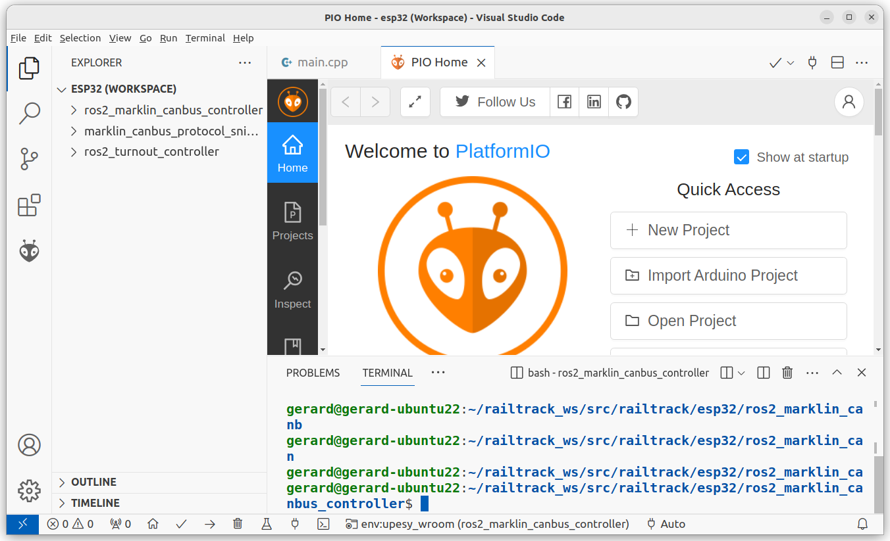
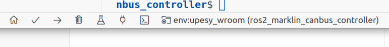
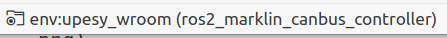
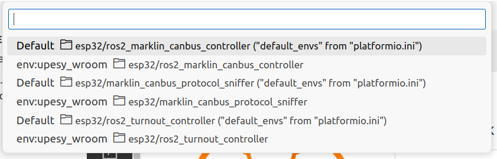
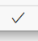
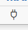

Brief instructions programming ESP32 devices with VisualCode/Platform IO
In this chapter the most important functions of programming an ESP32 device with Visual Code and the PlatformIO plugin are described.
Start Visual code
Enable PlatformIO environment (see: Visual Code/PlatformIO documentation)
Select ESP32 workspace:
File–>Open Workspace from File…–>esp32.code-workspace (in the ESP32 folder of this repository)
(Warning: Sometimes Visual Code display’s it’s dialogs behind the main window, toggle to the dialog window)

Commands can be given over the status bar at the buttom-side of the Visual Code Windows, see below.
Select project to program the ESP32, by hoving over the status bar and click the Switch PlatormIO project Environment.

Next, select project from Projects list window:
Build project, by hoving over the status bar and click the Build button, no erros should appear in the Therminal

Connect ESP32 device to the computer throug a USB-cable.
Upload the program to the ESP32, by hoving over the status bar and click the Upload button, no erros should appear in the Therminal

Alternaty you can monitor the output of the program in the serial monitor window, by hoving over the status bar and click the Serial Monitor button.
